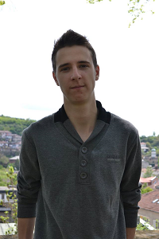
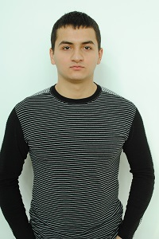

Petar is an old school soft spartan. He is coding since the dawn of time (1997). Since than he dreams in code. Unfortunately in the real life he fights with non open source software like AutoCad. He found SoftUni earlier this year and since then he trains hard day and night preparing for his glorious coding future!
Venelin is a soft spartan living in the dangerous suburbs of east Lulin. Once upon a time he was obsessed by the dark side which made him a mean villain creating bugs and errors all across the web. After he met an old hermit he was shown the SoftUni path so he changed his views and now he's fighting against what he did in the past.

Hristo is rookie soft spartan. He began his journey in coding after graduating traning school in the province. Once he entered the new battlefield he had only one goal. Ever since in his mind was his goal - to accomplish the hard spartans univesity.

Kaloyan Marinov is a furious soft-spartan warrior about batch virus and system hack programming. He is also known to have a bias for CSharp and Java wheapon developement. Hardware knowledge is always an advantage in any kind of computer ware development which is also an advantage for this young software spartan warrior. OS optimization and computer systems management are some of the other skills that Kaloyan goes in for.